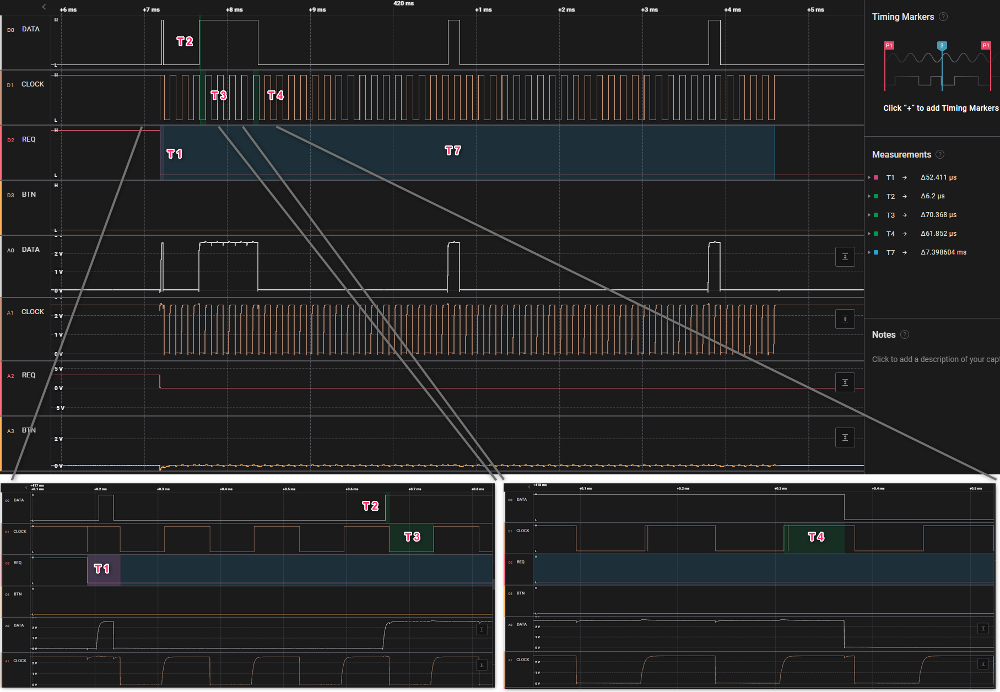
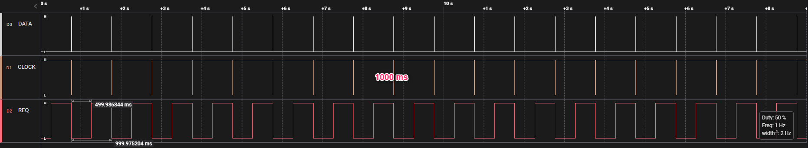
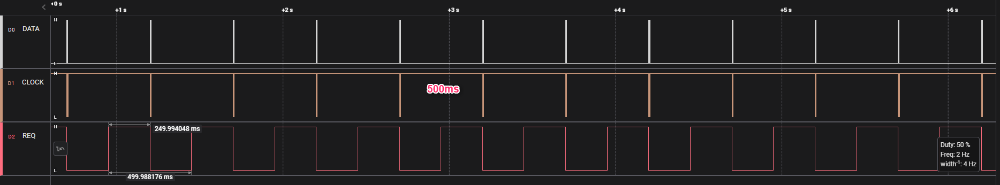
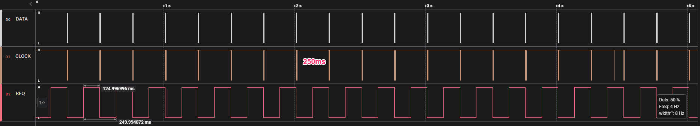
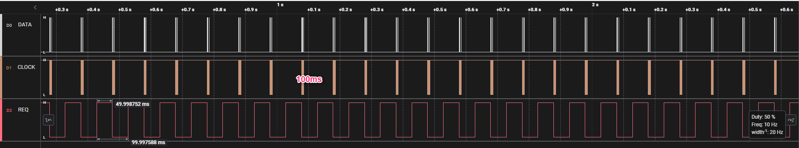
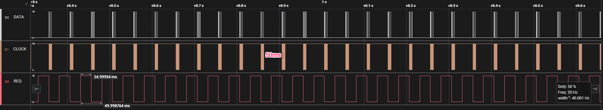
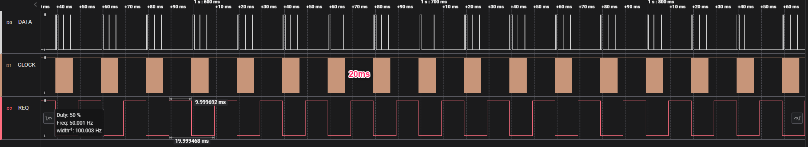
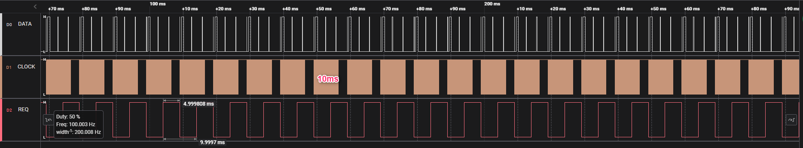

(Datenblatt: Mitutoyo Digimatic Micrometer Manual MDH-MB No. 99MAB045A: "99MAB045A.pdf"):


1000ms 
500ms 
250ms 
100ms 
50ms 
20ms 
10ms

Zoom in:

Zoom out:

Alle Zeiten in toleranzen, T6 ist manuel betätigt.
| Zeit | Typ | Min | Max | Ist |
|---|---|---|---|---|
| T1 | - | 0 ms | 200 ms | 52 us |
| T2 | - | 0,1 ms | 0,3 ms | 0,006 ms |
| T3 | - | 0,1 ms | 0,3 ms | 0,070 ms |
| T4 | - | 0,1 ms | 0,3 ms | 0,062 ms |
| T6 | - | - | - | <10 ms |
| T7 | - | - | - | 7,4 ms |
Datei sind plausibel in jede bereich, im allen Zykluszeiten stabil bis 10ms! Keine Datei ist verloren.
Andere wirkungen:
Bei 10ms, Anzeigebild an C1202 ist bisschen langsam, aber funktionier Vollständig und mit giltigen Datei:

Bei 100ms Anzeigebild Influss ist gering.
Atwort Zeit ist konstant im allen bereichen.